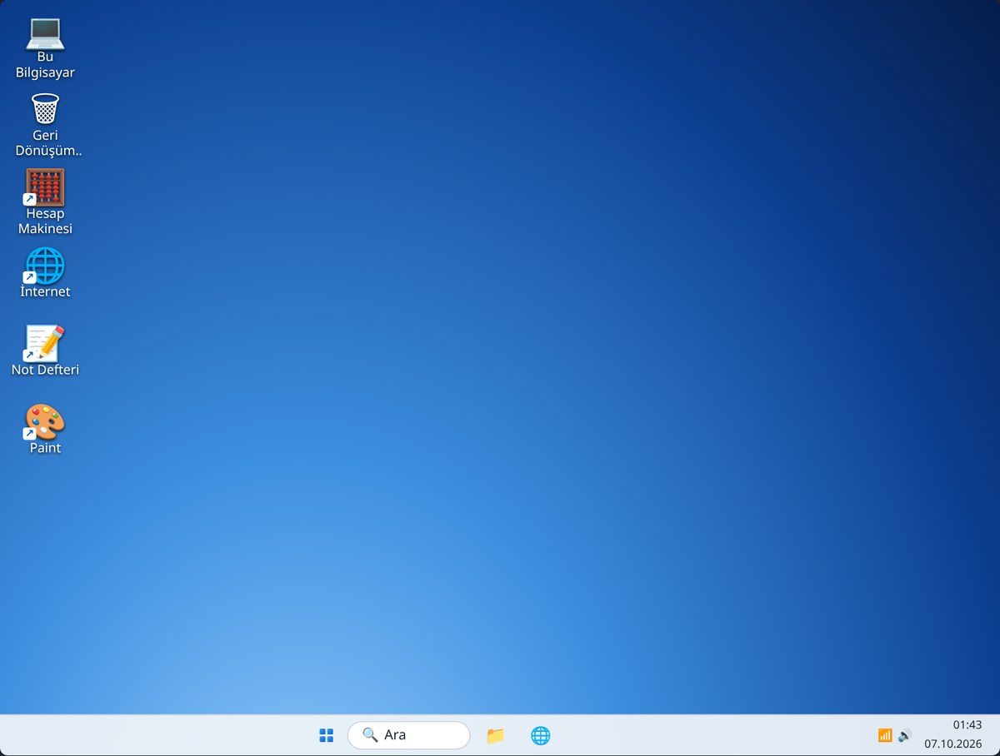
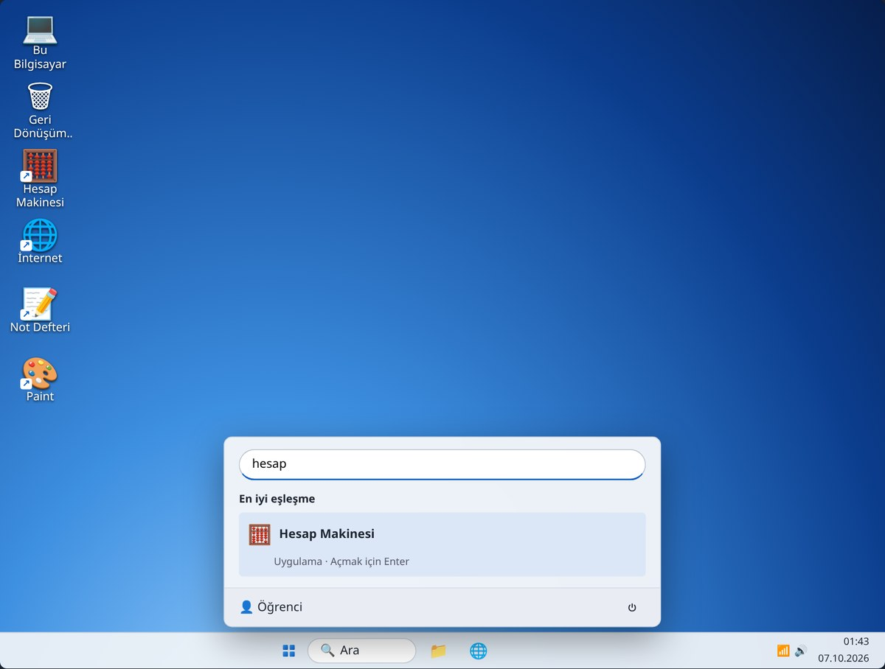
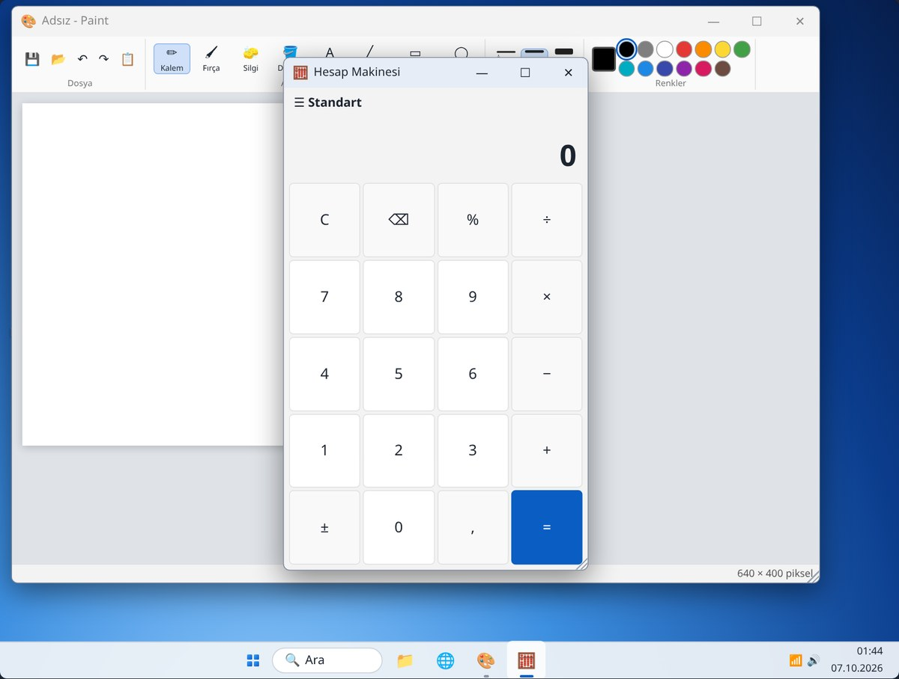
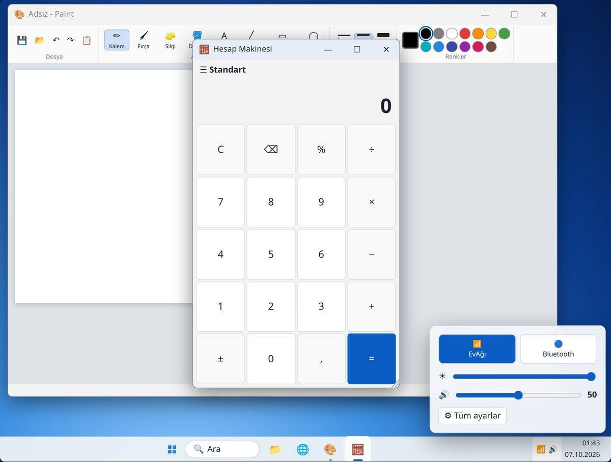
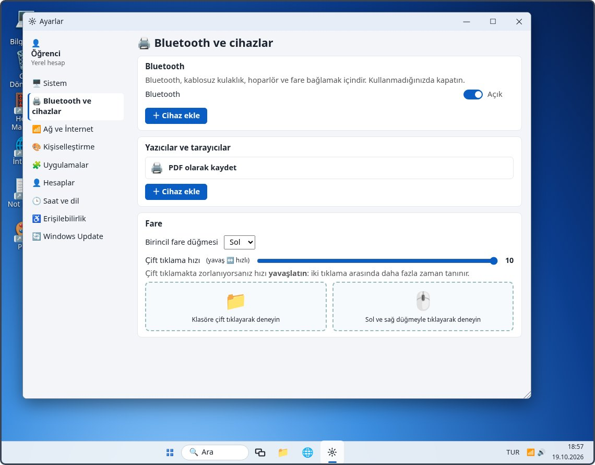
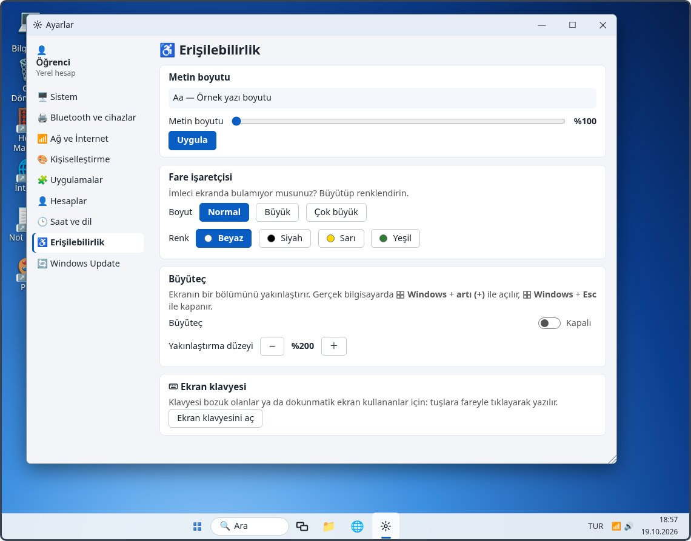
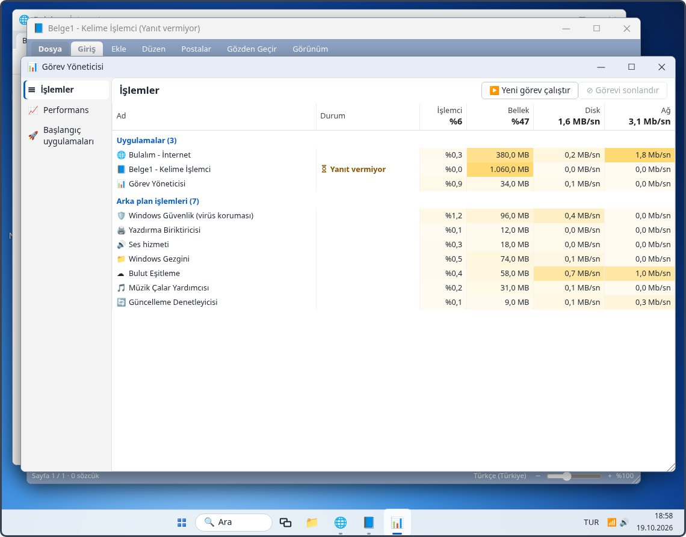
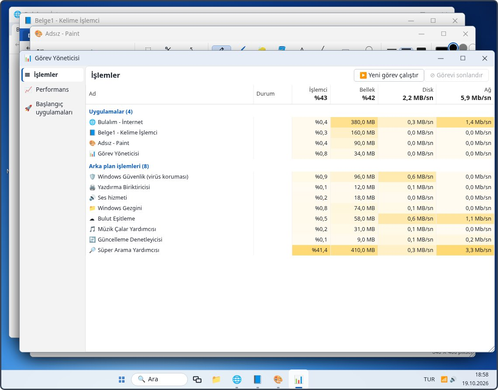

5. Hafta: Masaüstü, Başlat menüsü ve pencereler
Alıştırmalar
Bu hafta
| 1 Masaüstü, Başlat ve görev çubuğu | 20 dk |
|---|---|
| 2 Başlat menüsünü keşfedin | 20 dk |
| 3 Masaüstünü düzenleyin | 20 dk |
| 4 Hesap Makinesi ile günlük hesaplar | 25 dk |
| 5 Yapışkan Notlar, Ses Kaydedici, Alarm | 30 dk |
| 6 Takvim: randevu ve hatırlatıcı | 25 dk |
| 7 Fareyi kendinize göre ayarlayın | 25 dk |
| 8 Büyüteç ve okuma kolaylıkları | 20 dk |
| 9 Ekran Klavyesi | 20 dk |
|---|---|
| 10 Oyunlarla pratik | 25 dk |
| 11 Program dondu! Görev Yöneticisi | 30 dk |
| 12 Görev Yöneticisi: kim yoruyor? | 25 dk |
| 13 İki pencereyi yan yana koymak | 20 dk |
| 14 Sanal masaüstleri | 25 dk |
| 15 Masaüstü parkuru | 20 dk |
| 16 Masaüstü haritası | 15 dk |
Hafta sonunda: ödev (gerçek bilgisayarda altı küçük görev) ve 11 soruluk test.
Ders 1 · Masaüstü

Ders 1 · Alıştırma 1
| 1 | Başlat’a tıklayın, açılan menüden Paint’e tıklayın. |
|---|---|
| 2 | Başlat’ı açıp hemen hesap yazın, Enter’a basın. |
Gerçek bilgisayarda da ⊞ tuşuna basıp yazmaya başlamak en hızlı yoldur.

Ders 1 · Alıştırma 2

Ders 1 · Alıştırma 3
| Alt + Tab | Alt’ı basılı tutup Tab’a basın: açık programlar arasında geçersiniz. |
|---|---|
| Ses simgesi | Sağ alttaki simgeye tıklayın, ses çubuğunu sürükleyin. |
Hoparlörden ses gelmiyorsa ilk bakılacak yer ses düzeyidir.

Ders 2–3 · Başlat ve masaüstü
| Esc | Başlat’ı kapatır |
|---|---|
| Başlat açıkken yazmak | Arama yapar: dosya → Dosya Gezgini |
| 🔍 Ara | Görev çubuğundan doğrudan arama |
| ⏻ Güç | Uyku, Kapat, Yeniden başlat |
| ⊞ + E · ⊞ + I | Dosya Gezgini · Ayarlar |
| ⊞ + D · ⊞ + L | Masaüstünü göster · bilgisayarı kilitle |
| 1 | Boş yere sağ tık → Yeni → Klasör; adını yazıp Enter |
|---|---|
| 2 | Dosyaları sürükleyip klasörün üzerine bırakın |
| 3 | Sağ tık → Görünüm → Büyük simgeler |
| 4 | Sağ tık → Kişiselleştir: arka plan |
| 5 | Geri Dönüşüm Kutusu’na sağ tık → Geri Dönüşüm Kutusunu boşalt |
Ders 4 · Hesap Makinesi
| Market | 45 + 32,50 + 18 = 95,50 TL |
|---|---|
| Faturalar | 412,50 + 187,30 = 599,80 TL |
| Kişi başı | 1.200 ÷ 4 = 300 TL |
| Bir yıl | 750 × 12 = 9.000 TL |
| %20 indirim | 2000 − 20 % = → 1.600 TL |
| Para üstü | 200 − 137,50 = 62,50 TL |
Ders 5 · Küçük yardımcılar
| 🗒 Yapışkan Notlar | Renkli kısa notlar; kapatınca silinmez. ＋ Yeni not, rengi üstteki noktalardan, silmek için 🗑 |
|---|---|
| 🎙 Ses Kaydedici | Kırmızı ● ile başlar, ■ ile durur. Kayıt Belgeler › Ses kayıtları klasörüne gider |
| ⏰ Saat → Alarm | Belirli bir saatte çalar; adını yazın: İlaç saati → ＋ Ekle. Çalınca 💤 Ertele (5 dk) |
| ⏳ Zamanlayıcı | Şu andan belli bir süre sonra çalar: çay demi, fırındaki yemek |
Hepsi Başlat menüsündedir. Alarm için bilgisayar açık, sesi açık olmalı; sessizdeyse çalmaz.
Ders 6 · Takvim
| 1 | ⊞ Başlat’tan 📅 Takvim’i açın (Başlat’ta takvim yazmak da olur). |
|---|---|
| 2 | Bir güne tıklayın; altta ＋ Randevu ekle: Doktor randevusu, saat 10:30, hatırlatma 15 dk önce → Ekle. |
| 3 | Randevudan 15 dakika önce sağ altta bildirim çıkar. |
| 4 | İptal olan randevunun yanındaki ✕ ile silin. |
Ders 7 · Fare ayarı
| Çift tıklama hızı | Çift tık zorsa çubuğu yavaş tarafa çekin (3 ya da daha az) |
|---|---|
| Birincil düğme | Sol elini kullananlar için Sağ; ortak bilgisayarda yine Sol yapın |
| Fare işaretçisi | İmleci bulamıyorsanız boyutu Çok büyük, rengi Sarı |
Ayarlar → Bluetooth ve cihazlar → Fare. İmleç: Ayarlar → Erişilebilirlik → Fare işaretçisi.

Ders 8–9 · Erişilebilirlik
| Ctrl + tekerlek | Penceredeki yazıyı büyütür / küçültür (Ctrl + + / Ctrl + −) |
|---|---|
| ⊞ + + · ⊞ + Esc | Büyüteç: bütün ekranı yakınlaştırır · kapatır |
| Metin boyutu | Bütün yazıları büyütür |
| Ekran klavyesi | Önce yazılacak yere tıklayın, sonra ekrandaki tuşlara. Tuş bozuksa işe yarar |
Hepsi Ayarlar → Erişilebilirlik sayfasında. Ekran klavyesi için Başlat’a ekran klavyesi yazmak da olur.

Ders 11 · Görev Yöneticisi
| 1 | Önce biraz bekleyin: program çoğu zaman ağır bir işi bitirince kendine gelir. |
|---|---|
| 2 | Görev çubuğuna sağ tık → Görev Yöneticisi (Ctrl + Shift + Esc). |
| 3 | Yanıt vermiyor yazan satıra tıklayın. |
| 4 | ⊘ Görevi sonlandır. Kaydedilmemiş iş kaybolur. |
Bilgisayar tamamen kilitlendiyse Ctrl + Alt + Delete. Başlangıç uygulamaları: açılışı yavaşlatan gereksizleri devre dışı bırakın.

Ders 12 · Görev Yöneticisi
| Sütun başlığı | Tıklayınca sıralar: en çok kullanan en üste çıkar |
|---|---|
| İşlemci | Çalışma yükü; sürekli yüksekse bilgisayar ağırlaşır |
| Bellek | Tuttuğu hafıza (MB); tarayıcılar çok tutar |
| Disk ve Ağ | Tanımadığınız bir programın ağ kullanması şüphelidir |
| ▶ Yeni görev çalıştır | notepad, calc, mspaint yazarak program açar |
Tanımadığınız program: adını internette aratın, güvenli değilse açılışta çalışmasını kapatın.

Ders 13–14 · Pencereler
| Başlık çubuğunu kenara sürükleyin | Gölge çıkınca bırakın: pencere o yarıya yerleşir; öbür yarıda çıkan listeden ikinci pencereyi seçin |
|---|---|
| ☐ üzerinde bekleyin | Küçük yerleşim kutusu: sol yarı ya da sağ yarı |
| ⊞ + ← / ⊞ + → · ⊞ + ↑ | Sola / sağa yasla · ekranı kapla |
| Ortaya sürükleyin | Pencere eski boyutuna döner |
| ⊞ + Tab ya da ⧉ | Görev Görünümü |
|---|---|
| ＋ Yeni masaüstü | ⊞ + Ctrl + D |
| ⊞ + Ctrl + ← / → | Masaüstleri arasında geçiş |
| Pencereye sağ tık | Şuraya taşı → Masaüstü 2 |
| Masaüstündeki ✕ | Kapatır; pencereler yandakine geçer |
Ders 10, 15–16 · Tekrar
| Oyunlarla pratik | Mayın Tarlası (sol tık açar, sağ tık bayrak) ve Kart Dizme; küçültüp görev çubuğundan geri getirin. |
|---|---|
| Masaüstü parkuru | 10 görev, yönlendirme yok: arayarak aç, hesap yap (1250 − 375), Alt + Tab, masaüstünü göster, sesi kapat-aç. |
| Masaüstü haritası | Neyi nerede bulurum? Görev çubuğu, Başlat menüsü, pencerenin üstü. |
Masaüstündeki program simgesi yalnızca kısayoldur; silinse de program Başlat menüsünde durur.
Özet
| Başlat | Bütün programlar; açınca hemen yazarak arayın |
|---|---|
| Görev çubuğu | Açık programlar: tıklayınca öne gelir ya da küçülür |
| Sağ alt köşe · Alt + Tab | Masaüstünü göster · pencereler arasında geç |
| Ses ve Wi-Fi simgeleri | Ses düzeyi ve internet bağlantısı |
| Sağ tık → Yeni → Klasör | Masaüstünde yeni klasör |
| Hesap Makinesi | + − × ÷, virgül kuruş için, 2000 − 20 % = |
| Yapışkan Notlar · Saat | Kısa notlar · alarm ve zamanlayıcı |
| Takvim | Randevu + hatırlatma (bilgisayar açıkken) |
|---|---|
| Ayarlar → Bluetooth ve cihazlar | Fare: çift tıklama hızı |
| Ayarlar → Erişilebilirlik | Fare işaretçisi, Büyüteç, Ekran klavyesi |
| Ctrl + Shift + Esc | Görev Yöneticisi: Görevi sonlandır |
| ⊞ + ← / → | Pencereyi sola / sağa yasla |
| ⊞ + Tab | Görev Görünümü, sanal masaüstleri |
Ödev: kendi bilgisayarınızda altı küçük görev; ödev kâğıdı yazdırılabilir. Test: 11 soru, tekrar içindir.